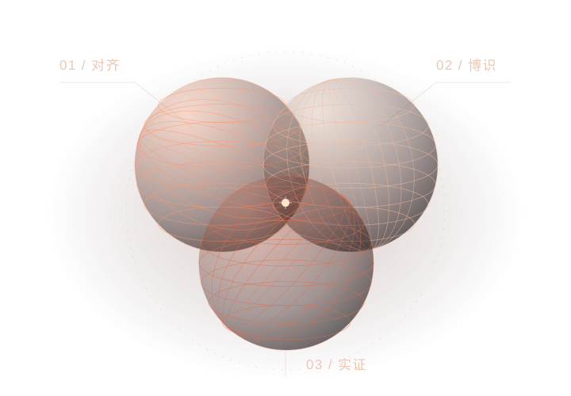

AI PRODUCT EXPLORATIONS · 2026
Jiaqing
Wang.
王家庆 · AI 应用与产品实践
探索小模型如何做更复杂的事、智能体如何融入持续使用，以及 AI 作品如何真正交付。
以需求描述与反复试用推进，代码主要借助 AI 完成。
SELECTED WORK / 01—04
从具体问题出发。
三个开发中的应用与评测项目，
以及一项 Agent 工作环境的交互探索。
WORK SAMPLES
把工作过程展开看看。
从现有项目里提取可操作的工具与有出处的产品取舍。
ABOUT MY PRACTICE
关注能力，
也关注使用者。
我对 AI 的兴趣来自实际使用：怎样减少遗漏，怎样延续之前的工作，怎样知道一个成果真的能用。
这些项目通过自然语言需求、AI 辅助搭建与反复试用推进。它们让我持续思考应用场景、交互方式和验收标准。
我尚无正式工作经验，独立理解和修改代码的能力仍有限。项目已有实现、设计目标和验证结果在案例中分别说明；开源基础均保留归属。
LET’S TALK
一起把一个具体问题，
做得更好。
gulagala@outlook.com ↗
目前在大连，优先远程或大连线下实习。到岗日期、周工时与连续时长待协商；英文文字沟通借助翻译工具，口语较弱。